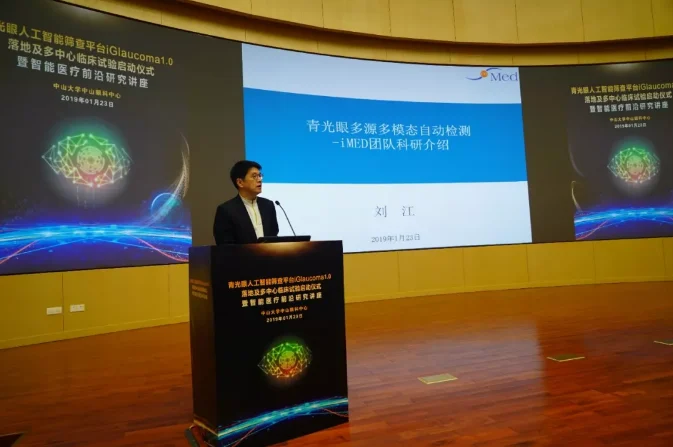
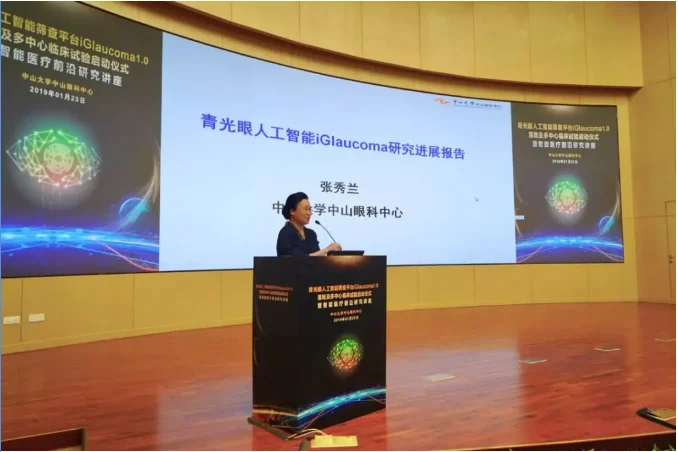
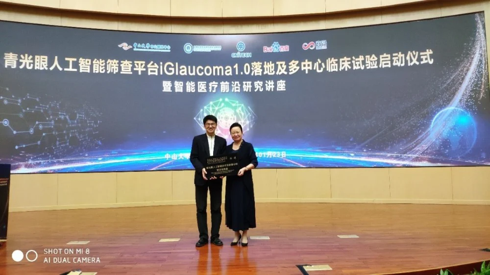
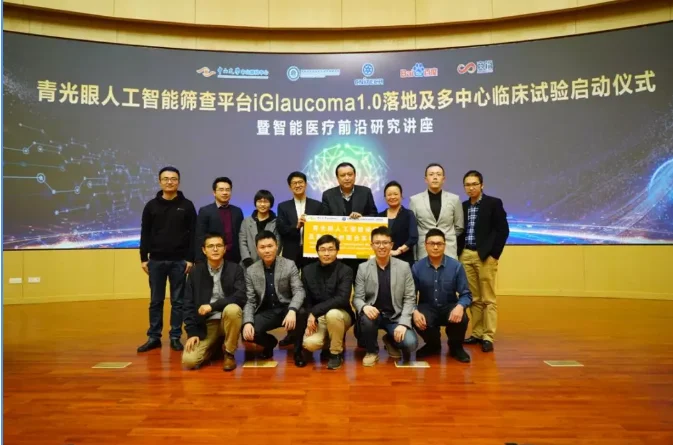

2019年1月23日下午，中科院宁波工研院慈溪医工所iMED中国团队骨干刘江高级研究员、赵一天副研究员、杨建龙副研究员、胡衍副研究员和王浩一行赴广东中山大学中山眼科中心举行青光眼人工智能诊疗及影像分析实验室揭牌仪式。会上，中山大学中山眼科中心院长刘奕志教授、中山眼科中心前任院长青光眼学术带头人葛坚教授相继致辞，对此实验室的启动给予了充分的肯定，并将大力支持我所与中山眼科中心开展青光眼人工智能诊疗和影像分析的研究工作。
刘江高级研究员作了题为《青光眼多源多模态自动检测》的报告，分享了青光眼筛查系统AGLAIA-MII的模型设计和临床验证结果，结合医学文本信息、图像信息和基因信息的信息融合算法和人工智能优化算法的开发出了一系列精准的青光眼筛查算法，连续10年刷新行业内视杯视盘分割和基于眼底图像的青光眼诊断准确率的世界纪录，并且使得人工智能有了在眼科医学图像中的可解释性。
中山大学中山眼科中心张秀兰教授作《青光眼人工智能研究进展》报告，她表示，受限于我国眼科医生数量少及医疗资源的分布不均的情况，青光眼筛查及早期诊断处于困局之中。我们将通过人工智能的方式解决临床青光眼早期诊断中的重点、难点，辅助医生快速、准确地诊断青光眼，具有切实的应用价值的实际问题。团队还将致力于研发最前沿的人工智能算法，全方位解读青光眼前后节多模态影像数据，打造最先进的人工智能辅助下的青光眼诊疗及影像分析决策平台。
本次活动在热烈的讨论中圆满结束。青光眼人工智能诊疗及影像分析实验室的成立对我所眼科人工智能领域的发展具有很大的意义，使得科研与临床紧密结合。希望在刘江高级研究员和张秀兰教授的带领下，取得更大成果！

刘江高级研究员主旨演讲

张秀兰教授作青光眼人工智能研究进展报告

刘江高级研究员与张秀兰教授

葛坚教授、张秀兰教授、刘江教授及团队成员成立联合实验室
作者：王浩